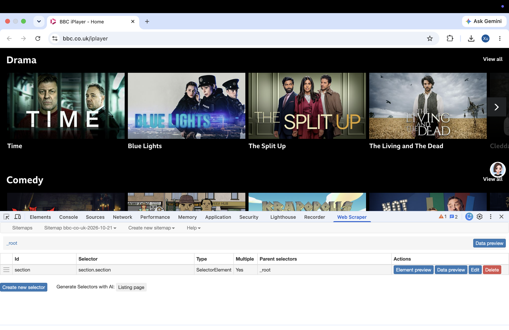
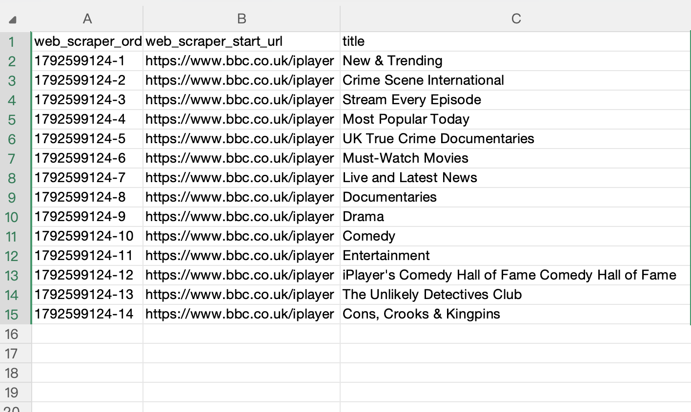
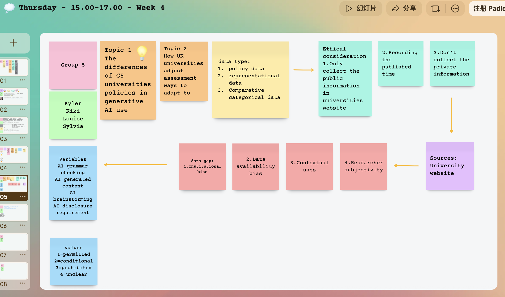
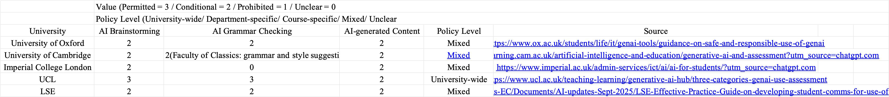
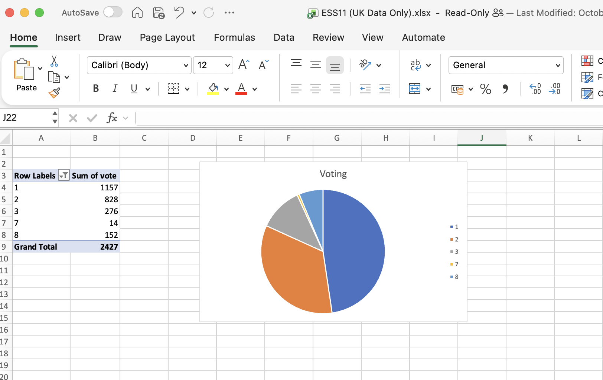
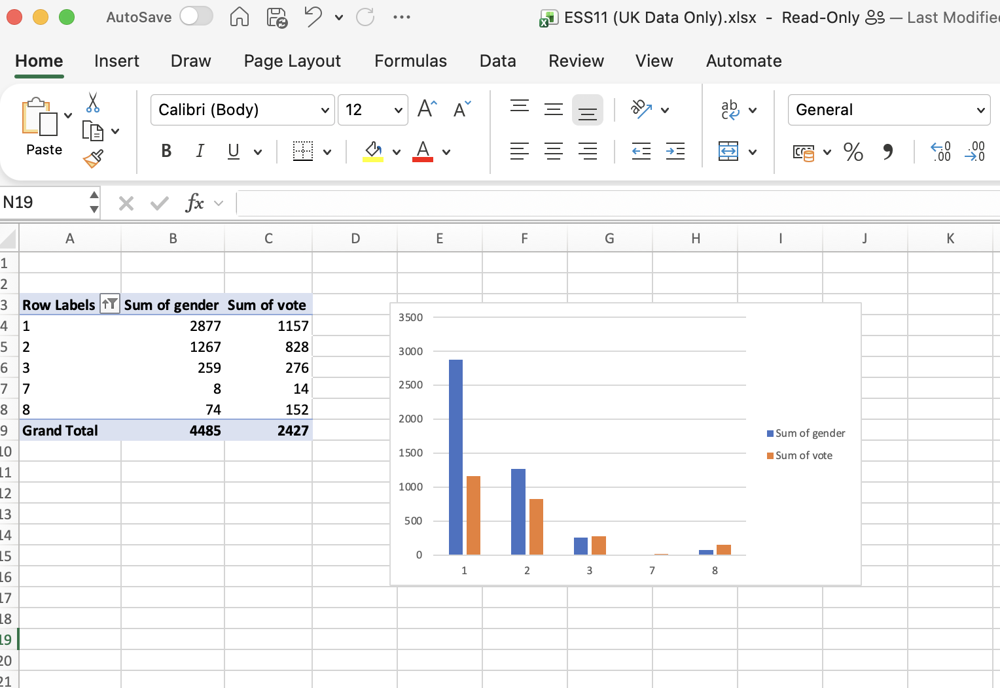

01
💚
Week 1: Introduction to Digital Media
The first week is introduction week,
it was the very first time that I got to know about digital media and digital practice. Professor
Holly Steel, who is a very cute and kind teacher, intreduced us to the course and the content of the course.
I found that we all live in the digital world,and digital media is everywhere in our daily life.
I learned that digital media is a new way to express ourselves and communicate with others.
02
🧡
Week 2: Creating Websites
In the second week, we finally started to explore the real-world of digital practice.
We had our first workshop, and we learned how to use different tools such as VS Code, GitHub and
even our school's own website to create our own website. I learned a little bit about HTML and CSS,
and I found that it is not as difficult as I thought.
I found that I can use these tools to create my own website and express myself in a digital way. Even though I'm a beginner, I can't make every code perfect,
but I can learn from my mistakes and improve myself. I think digital practice is a very interesting and useful skill,
and I ant to learn more about it in the future.
03
💜
Week 3: Web Scraping


This week, we learned about the basic methods of web scraping and data collection.
It was a great opportunity to learn about how to gather information from the web and use it for our projects.
Teacher introduced us two different ways of web scraping, one is using Python and the other is using web scraper.
I tried both methods and found that web scraper is more convenient and easier to use, python is a little bit more
complicated for beginners like me.
I learned that web scraping is not allowed on all websites, and we need to be careful about the website we want to scrape.
Teacher taught us how to use web scraper on https://www.bbc.co.uk/iplayer, and I found that it is very useful to collect data that we want on the web.
04
💚
Week 4: Data Practice
This week we did our first group project. We learned about data and data analysis, and how to create a dataset.
There were two different data collection scenarios.
We chose the second one, which is to collect and analyse data to understand the challenges related to the use of generative AI in assessment and how Universities have responded.
In the process of imagining and generating data, we chose to collect data of the differences between the UK G5 universities policies
on generative AI use. There were 3 variables that we mainly focused on, which are AI brainstorming, AI grammar checking and AI gnerated
content. We can find all the policies on the Universities' official websites, and we can also find some information on the news.


05
🧡
Week 5: Data Visualization
In the fifth week, we continued to work on our group work.
At first, we refeclted on the data that we collected.
We found that the most challenging part of the data collection was the unclear policies of some universities.
They don't have a specific word or defination of permitted or prohibited use of generative AI and all have different standards.
From the data we colledted, we want to learn the acceptance of the use of AI tools in assessment and daily studies in the top universities in the UK.
We can't collect enough data about the policies because they didn't write policies clearly.
If we have enugh time and resources, we want to collect data more specifically, may be focus on different courses or shchools.
In the next part, we tried to visualize the data.
Our dataset is rather limited, which makes visualisation difficult.
We therefore tried to create visualisations using the data provided by our tutor.
Tools within Excel can directly convert tabular data into charts such as pie charts and bar charts.
We can also select the data from rows and columns as required and choose suitable chart types for visualisation.
I have generated one pie chart and one bar chart as examples.


06
💜
Week 6: Identity, Algorithmic Identity, and Data
This week, we explored how social media platforms use data to understand us and create our algorithmic identities.
The workshop included three parts: input, output and process. I looked at the information collected by Douyin, which is the platform I mainly use.
I learned that the information we share is not only the content we post.
Our activities on the platform also leave data that can be used to predict our interests.
This made me think about whether a platform can really understand me through my online behaviour.
In Task 3, we were asked to choose 32 friends and put each of their latest 15 posts into one of 13 categories.
I found that the most difficult part was deciding how to categorise the posts.
Some photos included both friends and animals, but we could only choose one category for each post.
I asked Holly about this, and she told me that I needed to make the decision myself.
This made me realise that creating a dataset involves our own judgement.
Another person might put the same photo into a different category, so the results could be different even when we use the same posts.
I also noticed that many of my friends are people I met through dancing and K-pop, so the “music/sport/film” category would have a relatively high number of posts.
This made me think about how my choice of friends influences the dataset.
The numbers reflect something about my social circle, but they cannot show everything about my friends or their identities.
Through this activity, I learned that turning posts into numbers makes them easier to compare, but some of their meaning and context can be lost.
I now understand better why an algorithmic identity might be different from how we understand ourselves.